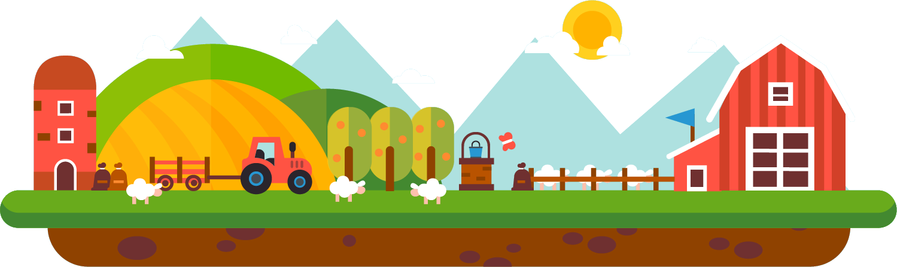

Prijava
Registracija
Več o projektu
How To Kmet
MENU
Ka pa je to?
Spletna aplikacija, ki nudi podporo pri vodenju evidenc tako malim kot velikim kmetovalcem.
Več o projektu

Computer vector designed by Freepik